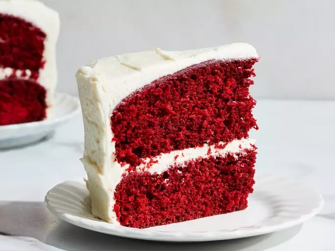

Home
Red Velvet

Description
This is a recipe for the most delicious Red Velvet cake you will ever taste!
Ingredients
- white sugar
- white vinegar
- buttermilk
- cake flour
- coco powder
- vanilla extract
- eggs
- baking soda
- salt
Steps
- Preheat the oven to 350 degrees F (175 degrees C). Grease two 9-inch round pans.
- Make the cake: Beat 1 1/2 cups sugar and shortening together in a large bowl with an electric mixer until light and fluffy. Add eggs one at a time, beating well after each addition. Combine red food coloring and cocoa to make a paste; add to creamed mixture.
- Mix buttermilk, salt, and 1 teaspoon vanilla together in a small bowl. Add flour, alternating with buttermilk mixture, mixing just until incorporated.
- Mix vinegar and baking soda together; gently fold into cake batter and pour into prepared pans.
- Bake in the preheated oven until a toothpick inserted into the center comes out clean, about 30 minutes. Cool on a wire rack for 5 minutes. Run a table knife around the edges to loosen. Invert carefully onto a serving plate or cooling rack. Let cool, about 30 minutes.